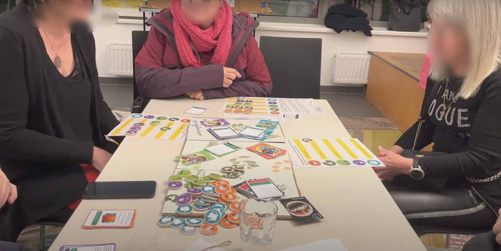

Urban Gardeing: Seestadt
This Seestadt project is a community-based initiative that aims to educate and engage children in Seestadt about the importance of climate change and gardening through the installation of interactive and collaborative plant displays in public spaces.
Our goal is to create a sense of community among the children of Seestadt by encouraging them to learn and explore together through these interactive displays. By using real plants, we aim to foster empathy and understanding towards the natural world, as well as provide a calming and soothing environment.
As a team member of this project, my role was to design and develop the interactive displays, which included creating the hardware and software system requirements that controlled the displays, as well as the user interface.
This project was a great opportunity for me to use my skills in design decisions to create something that had a positive impact on my community. I am proud to have been a part of this initiative, and I am excited to see the impact it will have on the children of Seestadt.
Provocative Requisits
Our project was based on the following provocative requisits:
- Creating a sense of community among the children of Seestadt through interactive and collaborative plant displays
- Fostering empathy and understanding towards the natural world through the use of real plants
- Providing a calming and soothing environment for children to learn and explore in
Design Game
We used a design game to explore different ideas and concepts for the interactive plant displays. The game involved a series of brainstorming and prototyping sessions, where we experimented with different design elements and user interactions.
Target Group
Our target group was primarily children aged 6-12 in the Seestadt community. We conducted research and user testing with this age group to ensure that the interactive plant displays would be engaging and appropriate for them.
Design of the Interface
The design of the interface for the interactive plant displays was carefully considered to ensure that it was user-friendly and intuitive for children. We used a combination of physical and digital elements to create an interactive and engaging experience.

Water the plants!
Outlook
We are currently in the process of implementing the interactive plant displays in various public spaces in Seestadt. We are also planning to conduct further research and user testing to gather feedback and make any necessary improvements.